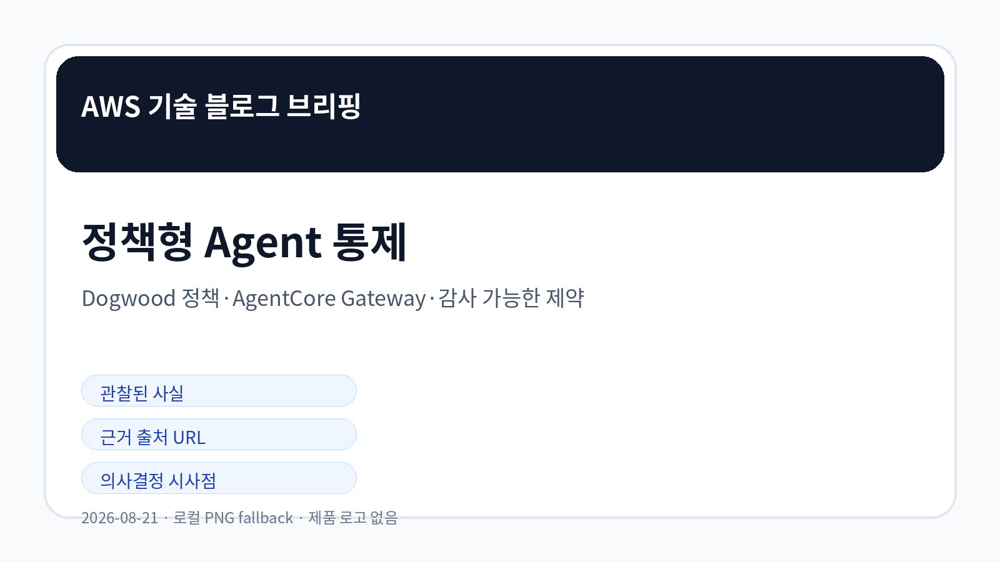
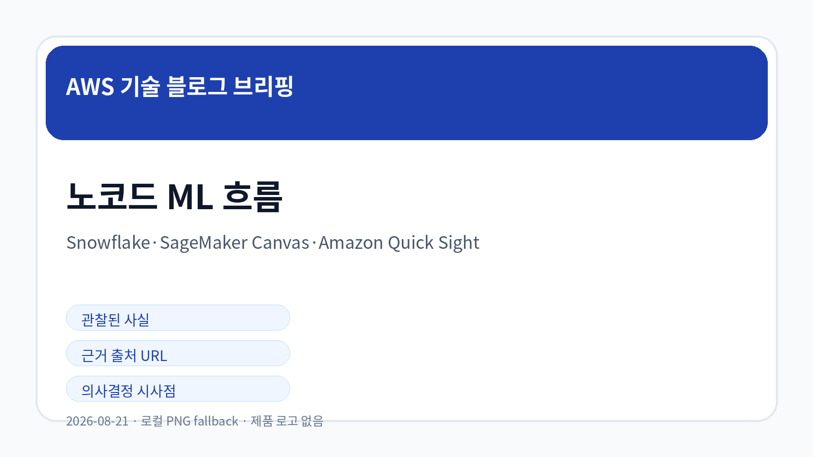
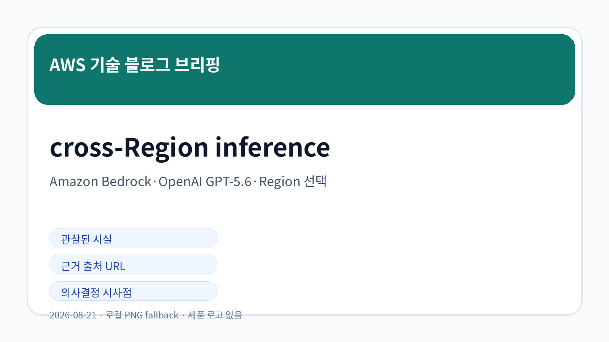

Amazon Bedrock AgentCore에서 자연어 정책을 Dogwood 정책으로 작성하는 방식
Amazon Bedrock AgentCore Policy Authoring이 자연어 정책 문서를 Dogwood formal specification으로 변환하고, 시간·순서·누적 효과 같은 제약을 AgentCore Gateway의 Dogwood monitor로 적용하는 내용이 확인되었습니다.
원문 확인AWS 공식 블로그 수집 · LLM Wiki 동기화
오늘 신규 저장·동기화된 5개 AWS 공식 블로그 글을 기준으로, 확인 가능한 사실과 의사결정 검토 포인트만 정리했습니다.

오늘 수집 항목은 Agent 정책 통제, Snowflake와 Amazon SageMaker Canvas 기반 노코드 ML, Amazon Quick Sight 시각화, Amazon Bedrock의 OpenAI GPT-5.6 cross-Region inference로 구성됩니다.
자연어 정책을 Dogwood 명세로 바꾸고 실시간 모니터로 적용하는 구조가 확인되었습니다.
Snowflake 데이터에서 모델 생성과 대시보드 공유까지 노코드 흐름으로 연결됩니다.
cross-Region inference는 용량 확보 기회를 제공하지만 데이터 처리 지역 검토가 필요합니다.
가격, 리전, 세부 제약, 보안 책임 범위는 원문과 공식 문서 기준으로 추가 확인이 필요합니다.

Amazon Bedrock AgentCore Policy Authoring이 자연어 정책 문서를 Dogwood formal specification으로 변환하고, 시간·순서·누적 효과 같은 제약을 AgentCore Gateway의 Dogwood monitor로 적용하는 내용이 확인되었습니다.
원문 확인Snowflake 데이터 환경과 Amazon SageMaker Canvas를 연결하기 위한 기반 설정을 다루며, 비전문가도 예측 모델 실험을 시작할 수 있는 전제 조건을 설명합니다.
원문 확인Amazon SageMaker Canvas에서 Snowflake 데이터를 직접 연결하고 Data Wrangler 시각 변환과 XGBoost 기반 모델 생성을 수행하는 절차가 소개되었습니다.
원문 확인SageMaker Canvas 예측 결과를 Amazon Quick Sight 데이터셋으로 가져와 대시보드와 자연어 기반 BI 인사이트로 공유하는 과정이 확인되었습니다.
원문 확인Amazon Bedrock에서 OpenAI GPT-5.6 모델을 25개 이상 AWS Regions와 cross-Region inference로 사용할 수 있으며, inference profiles가 요청을 대상 Region으로 라우팅하는 구조가 설명되었습니다.
원문 확인| 기사 | 게시 | 카테고리 |
|---|---|---|
| Amazon Bedrock AgentCore에서 자연어 정책을 Dogwood 정책으로 작성하는 방식 | 2026-08-21 | AI/ML |
| Snowflake와 Amazon SageMaker Canvas 기반 노코드 ML 환경 준비 | 2026-08-21 | AI/ML |
| Amazon SageMaker Canvas로 데이터 준비와 모델 생성을 수행하는 노코드 ML 흐름 | 2026-08-21 | AI/ML |
| Amazon Quick Sight로 SageMaker Canvas 예측 결과를 시각화하는 방식 | 2026-08-21 | AI/ML |
| Amazon Bedrock에서 OpenAI GPT-5.6 모델의 cross-Region inference 제공 | 2026-08-21 | AI/ML |
오늘 확인된 AWS 공식 블로그 신호는 생성형 AI와 데이터 분석 흐름에서 통제 언어, 현업형 모델링, 대시보드 전달, 지역 기반 추론 용량이 함께 검토되어야 함을 보여줍니다. 본문은 이번 실행에서 저장·검증한 원문 범위만 해석했습니다.

의사결정자는 각 기능을 단독 도입 대상으로 보기보다 데이터 권한, 모델 품질, 지역·비용 조건, 감사 가능성을 같은 체크리스트에서 비교해야 합니다.
국내 기업은 데이터 처리 지역, 내부 승인 체계, 현업 분석 역량, 서비스별 지원 리전을 원문과 공식 문서 기준으로 확인한 뒤 제한된 범위에서 검증하는 접근이 적합합니다.
관찰된 사실: Amazon Bedrock AgentCore Policy Authoring이 자연어 정책 문서를 Dogwood formal specification으로 변환하고, 시간·순서·누적 효과 같은 제약을 AgentCore Gateway의 Dogwood monitor로 적용하는 내용이 확인되었습니다.
기업 의사결정 시사점/리스크/기회: Agent 행동 통제를 코드나 프롬프트만으로 처리하지 말고, 정책 문서·형식 명세·실시간 모니터를 분리해 감사 가능한 통제 체계를 검토해야 합니다.
관찰된 사실: Snowflake 데이터 환경과 Amazon SageMaker Canvas를 연결하기 위한 기반 설정을 다루며, 비전문가도 예측 모델 실험을 시작할 수 있는 전제 조건을 설명합니다.
기업 의사결정 시사점/리스크/기회: 현업 주도 ML을 검토할 때는 도구 접근성보다 데이터 권한, Snowflake 연결 방식, 보안 경계, 실험 데이터 품질을 먼저 확인해야 합니다.
관찰된 사실: Amazon SageMaker Canvas에서 Snowflake 데이터를 직접 연결하고 Data Wrangler 시각 변환과 XGBoost 기반 모델 생성을 수행하는 절차가 소개되었습니다.
기업 의사결정 시사점/리스크/기회: 노코드 ML은 업무 속도를 높일 수 있지만 모델 품질, 피처 변환 이력, 데이터 누출, 승인된 배포 경로를 함께 관리해야 합니다.
관찰된 사실: SageMaker Canvas 예측 결과를 Amazon Quick Sight 데이터셋으로 가져와 대시보드와 자연어 기반 BI 인사이트로 공유하는 과정이 확인되었습니다.
기업 의사결정 시사점/리스크/기회: 예측 모델의 가치가 대시보드로 전달되려면 예측값의 최신성, 해석 가능성, 공유 권한, 의사결정 책임자를 함께 설계해야 합니다.
관찰된 사실: Amazon Bedrock에서 OpenAI GPT-5.6 모델을 25개 이상 AWS Regions와 cross-Region inference로 사용할 수 있으며, inference profiles가 요청을 대상 Region으로 라우팅하는 구조가 설명되었습니다.
기업 의사결정 시사점/리스크/기회: 모델 용량 확보와 지연시간 개선 기회가 있지만, geographic profile과 global profile 선택에 따라 데이터 처리 지역, 비용, 규제 검토가 달라질 수 있습니다.
Image Prompt 1/2/3은 동봉된 prompt log에 저장했습니다. 이번 실행은 GPT Image 2 시도 중 cron 제한으로 중단되어 한국어 로컬 PNG fallback을 사용했습니다.